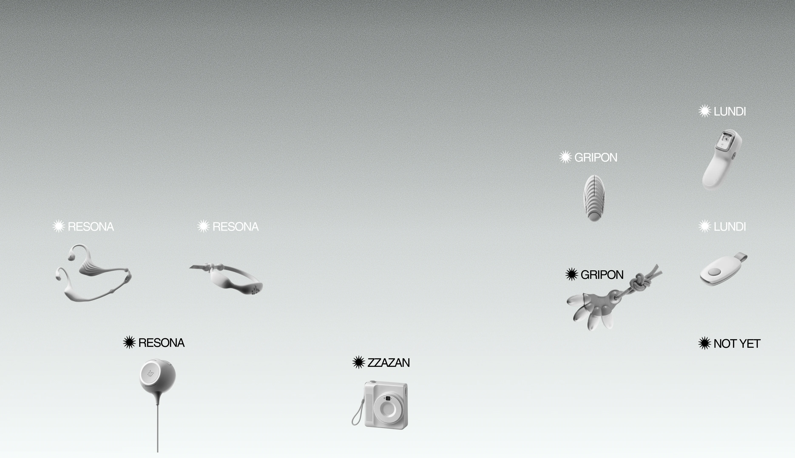
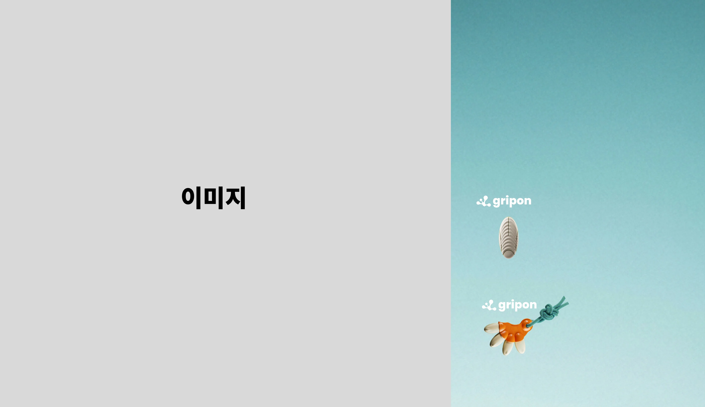
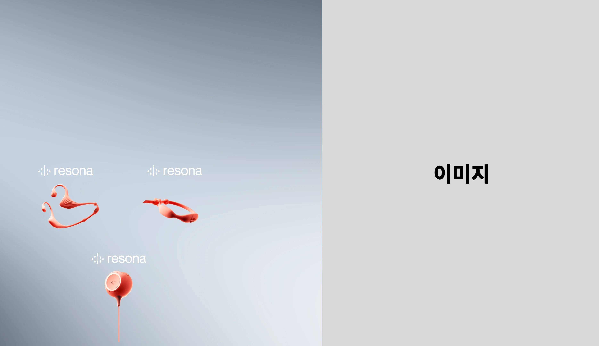
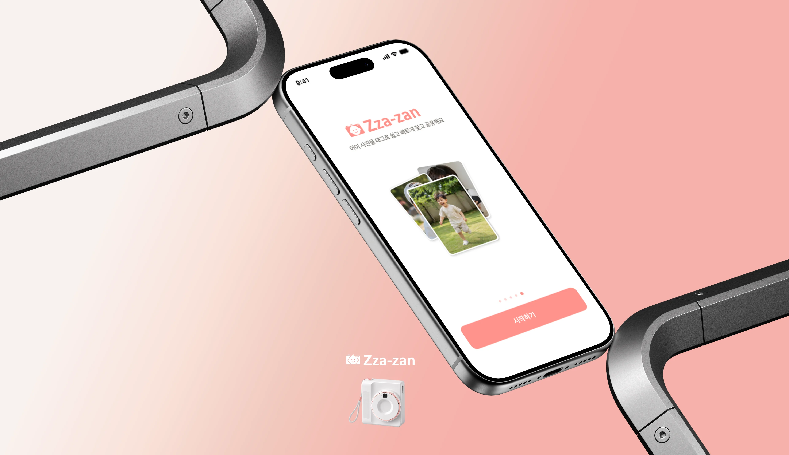

Home
Jieun.Seo
|
UX Designer
Home
About
Works
Contact
A Designer
Who Discovers Possibilities.
Gallery
Device




p5 — 준비 중
p1
p2
p3
p4
p5
Archive
001
All
Lundi
01
Gripon
02
Resona
03
Zzazan
04
Not yet
05
Jieun.Seo
JIEUN.SEO
Scroll →